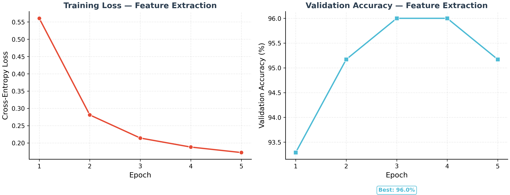
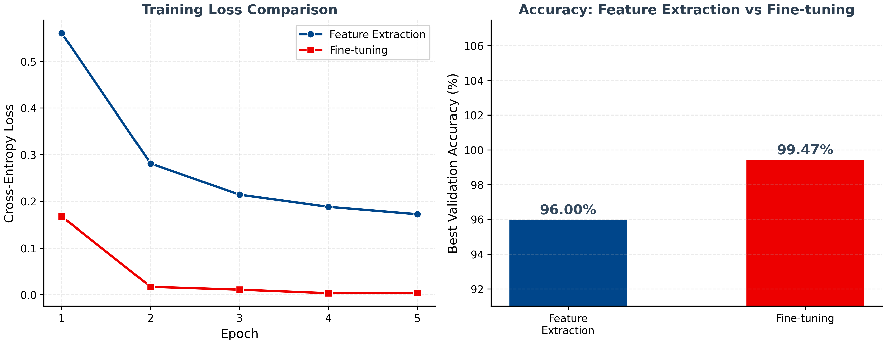
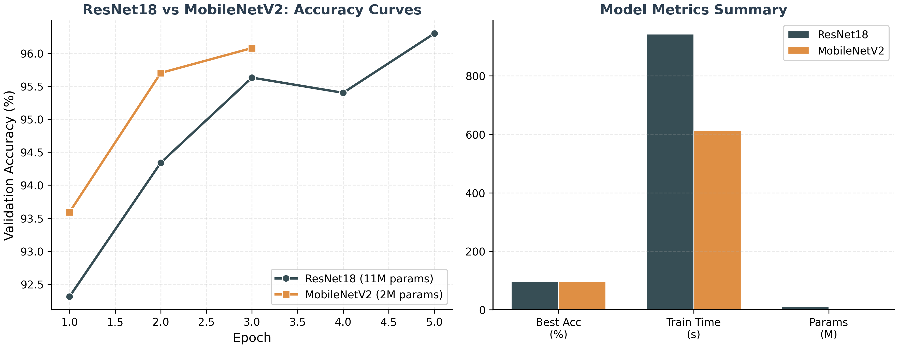
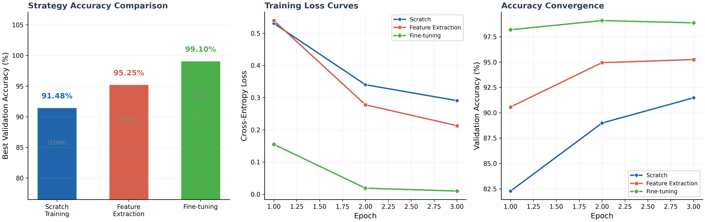
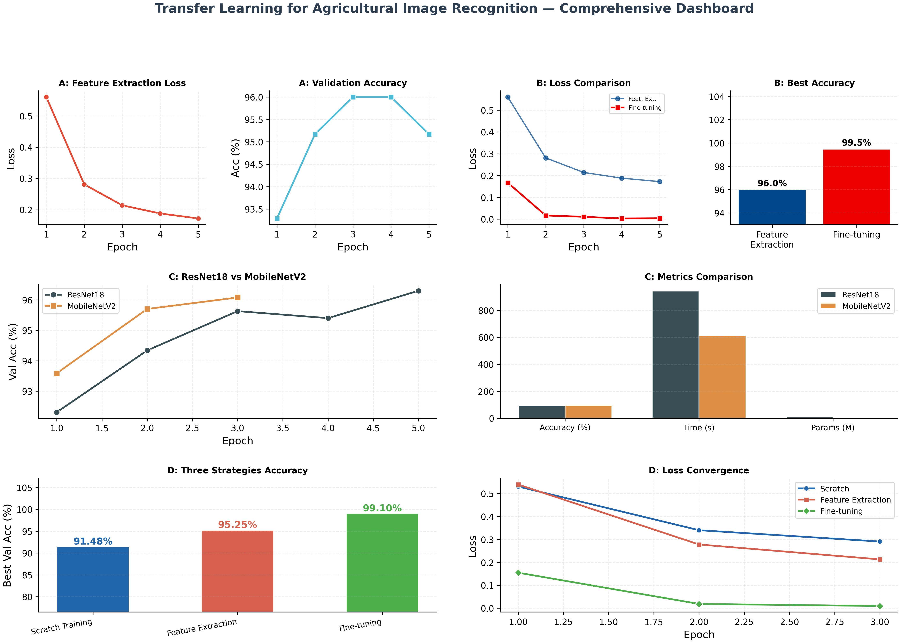
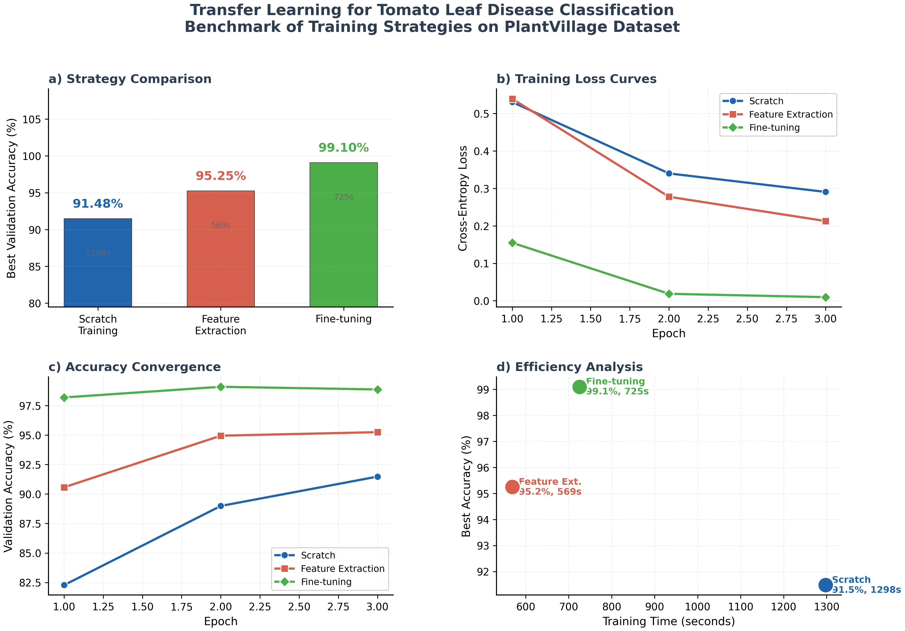
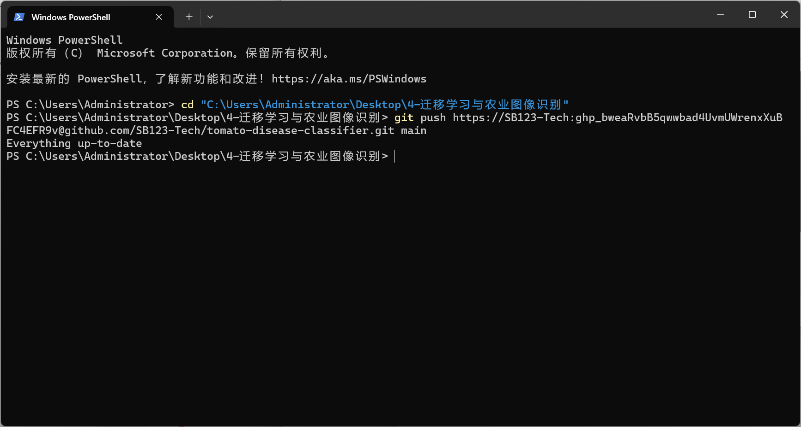
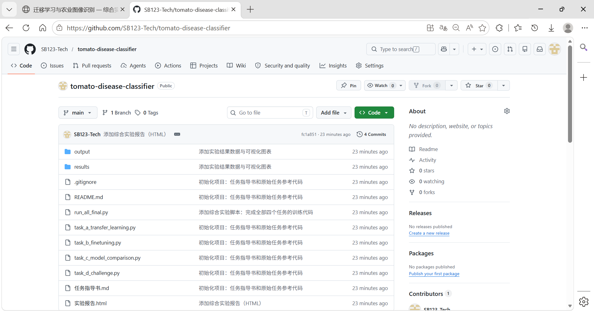

本实验使用 PlantVillage 番茄叶片数据集（6,627 张图片，4 个病害类别），系统对比了迁移学习中三种主流训练策略的效果：从零训练、冻结特征提取与微调，并比较了两种预训练架构（ResNet18 与 MobileNetV2）的表现。
| 类别 | 英文名 | 图片数 | 占比 |
|---|---|---|---|
| 健康叶片 | Healthy | 1,591 | 24.0% |
| 早疫病 | Early Blight | 1,000 | 15.1% |
| 晚疫病 | Late Blight | 1,909 | 28.8% |
| 细菌性斑点病 | Bacterial Spot | 2,127 | 32.1% |


| 指标 | ResNet18 | MobileNetV2 | 差异 |
|---|---|---|---|
| 最佳准确率 | 96.30% | 96.08% | −0.22% |
| 参数数量 | 11.2M | 2.2M | −80.1% |
| 训练时间 | 943s | 613s | −35.0% |
| 模型大小（估算） | ~44 MB | ~9 MB | −79.5% |

| 方案 | 最佳准确率 | 训练时间 | 可训练参数 | 效率评分* |
|---|---|---|---|---|
| 从零训练 (Scratch) | 91.48% | 1,298s | 11.2M (100%) | ★☆☆☆☆ |
| 冻结特征提取 (Frozen) | 95.25% | 569s | 2,052 (0.02%) | ★★★★☆ |
| 微调 (Fine-tuning) | 99.10% | 725s | 8.4M (75%) | ★★★★★ |
* 效率评分综合考虑准确率、训练时间和参数效率


下图以学术论文 Figure 1 的标准格式呈现，包含 (a) 策略对比、(b) 损失曲线、(c) 准确率收敛和 (d) 效率分析四个子图，适合直接用于论文或技术报告。

| 任务 | 模型/策略 | 最佳准确率 | 训练时间 | 参数量 |
|---|---|---|---|---|
| A — 特征提取 | ResNet18 (Frozen) | 96.00% | 921s | 2,052 / 11.2M |
| B — 微调 | ResNet18 (Fine-tune) | 99.47% | 1,179s | 8.4M / 11.2M |
| C — 模型对比 | ResNet18 (Frozen) | 96.30% | 943s | 11.2M |
| C — 模型对比 | MobileNetV2 (Frozen) | 96.08% | 613s | 2.2M |
| D — 综合对比 | ResNet18 Scratch | 91.48% | 1,298s | 11.2M |
| D — 综合对比 | ResNet18 Frozen | 95.25% | 569s | 2,052 / 11.2M |
| D — 综合对比 | ResNet18 Fine-tune | 99.10% | 725s | 8.4M / 11.2M |
| 场景 | 推荐方案 | 理由 |
|---|---|---|
| 云端高精度诊断 | ResNet18 微调 | 最高准确率 99.47% |
| 移动端/嵌入式设备 | MobileNetV2 微调 | 轻量（2.2M）、快速、准确率接近 |
| 快速原型验证 | ResNet18 冻结特征提取 | 最快训练（569s），准确率可接受（95-96%） |
| 数据极度稀缺 | 冻结特征提取 + 强数据增强 | 仅训练少量参数，过拟合风险低 |
在完成全部四个实验任务的过程中，使用 Git 对代码进行版本管理，共完成 4 次提交，记录每个阶段的实验进展，最终推送至 GitHub 远程仓库。
| 提交 | 说明 | 内容 |
|---|---|---|
9e472ac | 初始化项目 | 任务指导书、README、原始任务参考代码 |
03e19ab | 添加综合实验脚本 | 四个任务的完整训练和可视化代码 |
a15956c | 添加实验结果与图表 | 实验数据 JSON、6 张可视化图表 |
fc1a851 | 添加综合实验报告 | 完整的 HTML 实验报告 |

